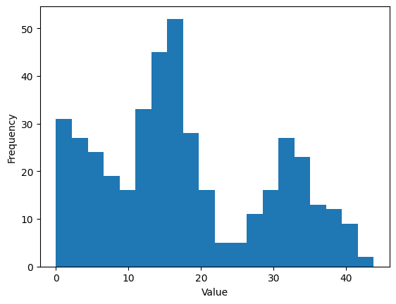
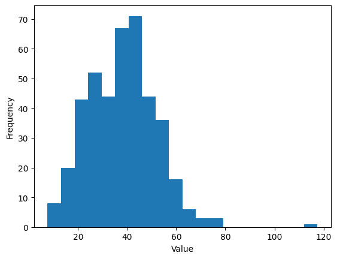
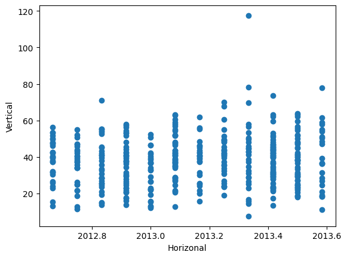
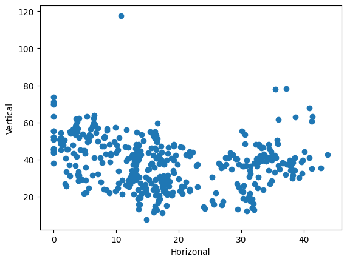
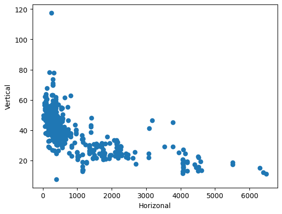
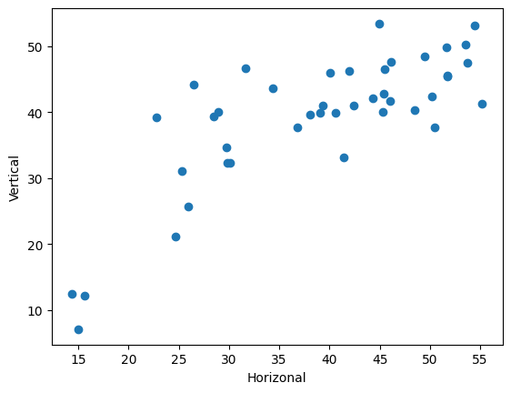
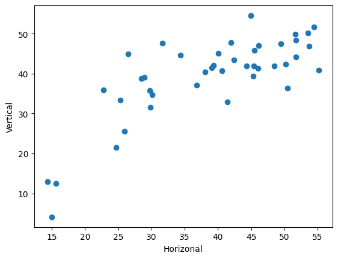

Lab 3: Data Processing & Linear Models#
This notebook is intended to get you familiar with the below topics:
Load, explore and split data
Using the scikit-learn library to train models (linear regression for example)
Load the real estate valuation dataset#
This data set consists of the market historical data set of real estate valuation collected from Sindian Dist., Taipei City.
More on the dataset: https://archive.ics.uci.edu/dataset/477/real+estate+valuation+data+set
Load the dataset#
import pandas as pd
df = pd.read_csv("./data/real_estate_valuation_dataset.csv")
Explore the data#
df.head()
| No | X1 transaction date | X2 house age | X3 distance to the nearest MRT station | X4 number of convenience stores | X5 latitude | X6 longitude | Y house price of unit area | |
|---|---|---|---|---|---|---|---|---|
| 0 | 1 | 2012.916667 | 32.0 | 84.87882 | 10 | 24.98298 | 121.54024 | 37.9 |
| 1 | 2 | 2012.916667 | 19.5 | 306.59470 | 9 | 24.98034 | 121.53951 | 42.2 |
| 2 | 3 | 2013.583333 | 13.3 | 561.98450 | 5 | 24.98746 | 121.54391 | 47.3 |
| 3 | 4 | 2013.500000 | 13.3 | 561.98450 | 5 | 24.98746 | 121.54391 | 54.8 |
| 4 | 5 | 2012.833333 | 5.0 | 390.56840 | 5 | 24.97937 | 121.54245 | 43.1 |
len(df)
414
df["Y house price of unit area"]
0 37.9
1 42.2
2 47.3
3 54.8
4 43.1
...
409 15.4
410 50.0
411 40.6
412 52.5
413 63.9
Name: Y house price of unit area, Length: 414, dtype: float64
df.describe()
| No | X1 transaction date | X2 house age | X3 distance to the nearest MRT station | X4 number of convenience stores | X5 latitude | X6 longitude | Y house price of unit area | |
|---|---|---|---|---|---|---|---|---|
| count | 414.000000 | 414.000000 | 414.000000 | 414.000000 | 414.000000 | 414.000000 | 414.000000 | 414.000000 |
| mean | 207.500000 | 2013.148953 | 17.712560 | 1083.885689 | 4.094203 | 24.969030 | 121.533361 | 37.980193 |
| std | 119.655756 | 0.281995 | 11.392485 | 1262.109595 | 2.945562 | 0.012410 | 0.015347 | 13.606488 |
| min | 1.000000 | 2012.666667 | 0.000000 | 23.382840 | 0.000000 | 24.932070 | 121.473530 | 7.600000 |
| 25% | 104.250000 | 2012.916667 | 9.025000 | 289.324800 | 1.000000 | 24.963000 | 121.528085 | 27.700000 |
| 50% | 207.500000 | 2013.166667 | 16.100000 | 492.231300 | 4.000000 | 24.971100 | 121.538630 | 38.450000 |
| 75% | 310.750000 | 2013.416667 | 28.150000 | 1454.279000 | 6.000000 | 24.977455 | 121.543305 | 46.600000 |
| max | 414.000000 | 2013.583333 | 43.800000 | 6488.021000 | 10.000000 | 25.014590 | 121.566270 | 117.500000 |
import matplotlib.pyplot as plt
def plot_histogram(data):
fig, ax = plt.subplots()
ax.hist(data, bins=20)
ax.set_xlabel("Value")
ax.set_ylabel("Frequency")
plot_histogram(df["X2 house age"])

plot_histogram(df["Y house price of unit area"])

def plot_scatter(X, Y):
fig, ax = plt.subplots()
ax.scatter(X, Y)
ax.set_xlabel("Horizonal")
ax.set_ylabel("Vertical")
plot_scatter(df["X1 transaction date"], df["Y house price of unit area"])

plot_scatter(df["X2 house age"], df["Y house price of unit area"])

plot_scatter(
df["X3 distance to the nearest MRT station"], df["Y house price of unit area"]
)

Convert to other formats#
Y = df["Y house price of unit area"]
type(Y)
pandas.core.series.Series
Y1 = Y.to_list()
type(Y1)
list
Y2 = Y.to_numpy()
type(Y2)
numpy.ndarray
# save as an excel xlsx file
df.to_excel("./data/real_estate_valuation_dataset.xlsx", index=False)
Split dataset#
Convert to numpy arrays#
features = [
"X1 transaction date",
"X2 house age",
"X3 distance to the nearest MRT station",
"X4 number of convenience stores",
"X5 latitude",
"X6 longitude",
]
X = df[features].to_numpy()
X.shape
(414, 6)
type(X)
numpy.ndarray
y = df["Y house price of unit area"].to_numpy()
y.shape
(414,)
type(y)
numpy.ndarray
from sklearn.model_selection import train_test_split
Split by ratio#
X_train, X_test, y_train, y_test = train_test_split(X, y, test_size=0.2, random_state=0)
print("X_train.shape =", X_train.shape)
print("X_test.shape =", X_test.shape)
X_train.shape = (331, 6)
X_test.shape = (83, 6)
Split by number#
X_train, X_test, y_train, y_test = train_test_split(X, y, test_size=100, random_state=0)
print("X_train.shape =", X_train.shape)
print("X_test.shape =", X_test.shape)
X_train.shape = (314, 6)
X_test.shape = (100, 6)
Use random seed to make it reproducible#
X_train, X_test, y_train, y_test = train_test_split(X, y, test_size=100)
X_train[0]
array([2012.75 , 0. , 208.3905 , 6. , 24.95618,
121.53844])
Train, validation, test split#
X_dev, X_test, y_dev, y_test = train_test_split(X, y, test_size=0.1, random_state=0)
X_train, X_val, y_train, y_val = train_test_split(
X_dev, y_dev, test_size=0.1, random_state=1
)
print("X_train.shape =", X_train.shape)
print("X_val.shape =", X_val.shape)
print("X_test.shape =", X_test.shape)
X_train.shape = (334, 6)
X_val.shape = (38, 6)
X_test.shape = (42, 6)
Fit linear model#
Linear regression#
from sklearn.linear_model import LinearRegression
from sklearn.metrics import mean_squared_error
model = LinearRegression()
model.fit(X_train, y_train)
LinearRegression()In a Jupyter environment, please rerun this cell to show the HTML representation or trust the notebook.
On GitHub, the HTML representation is unable to render, please try loading this page with nbviewer.org.
LinearRegression()
y_pred = model.predict(X_train)
mae = mean_squared_error(y_train, y_pred)
print("MSE on training set =", mae)
MSE on training set = 82.41466453682715
y_pred = model.predict(X_test)
mae = mean_squared_error(y_test, y_pred)
print("MSE on test set =", mae)
MSE on test set = 51.83750374286778
plot_scatter(y_test, y_pred)

Cross validation#
Q: What is the effect of data splitting on the model performance?
from sklearn.model_selection import cross_validate
model = LinearRegression()
cv_results = cross_validate(
model, X, y, cv=5, scoring="neg_mean_squared_error", return_train_score=True
)
cv_results["test_score"]
array([ -49.89284058, -89.03269132, -57.8698601 , -134.81795278,
-60.0483656 ])
Ridge regression#
Q: What is the effect of regularization on the model performance?
from sklearn.linear_model import Ridge
model = Ridge(alpha=0.1)
model.fit(X_train, y_train)
y_pred = model.predict(X_test)
mean_squared_error(y_test, y_pred)
55.220432534628344
plot_scatter(y_test, y_pred)
